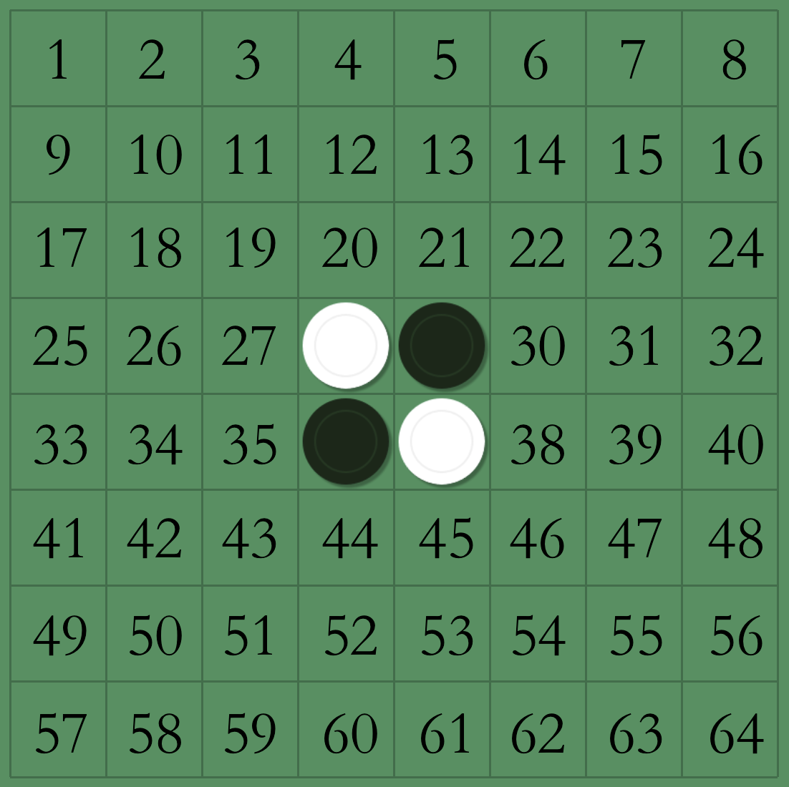

Comet OJ
Comet OJ输入共有 $17$ 行，除了第 $9$ 行外，每行 $8$ 個数。
第 $1$ 行至 第 $8$ 行的数字，第 $i+1$ 行接在第 $i$ 行後面，全部串起來就是先手(也就是小智)所选的排列。
第 $9$ 行为空行，作为两个排列的区隔。
第 $10$ 行至 第 $17$ 行的数字，第 $i+1$ 行接在第 $i$ 行後面，全部串起來就是后手(也就是樱花姐姐)所选的排列。
告别尼可博士后，小智一行人来到了华蓝市，此时小霞不知道跑哪儿去了，知道要去华蓝市的时候，她极力阻止，但完全没有效果，她就没再跟着小智了。小刚对小智卖了一下关子说他知道华蓝道馆训练师的绝招，但并没有告诉小智。在小智要寻找道馆的时候，小刚借口是要买东西离开了小智，于是小智只能带着皮卡丘，看着手里的地图寻找华蓝道馆。
来到华蓝道馆，进去发现里面座无虚席，底下有个游泳池，只听到场里有类似主持人的声音说："各位观众久等了，本市美女三姐妹的同步水中芭蕾舞秀，现在马上开始！"聚光灯照在三位美女身上，她们在欢呼声和热烈的掌声中，展现了惊艳众人的水中芭蕾舞秀，就连皮卡丘也看得两眼放光！
小智似乎没有被这三位美女吸引，继续寻找道馆训练师，在走廊上，他遇到了刚才跳舞的三位美女，在介绍自己来历和询问训练师情况之后，终于知道原来她们三个便是华蓝道馆的训练师。其中最美的樱花姐姐说："我们的宝可梦都被在你之前来的三个训练师给打受伤了，还在治疗中心接受治疗，现在我们的宝可梦都是没有战斗能力的。" 小智很苦恼，说："那怎么办呢？"
樱花姐姐想了一下，说："不如这样，我们来玩黑白棋。黑白棋游戏简介如下：
棋盘共有 $8$ 行 $8$ 列共 $64$ 格。有黑色和白色兩種棋子，先手持黑色，後手持白色。开局时，棋盘中央的 $4$ 格先置放黑白相隔的 $4$ 枚棋子，双方轮流擺放自己顏色的旗子。只要落子和棋盘上任一枚己方的棋子在一条线上（横、直、斜线皆可）夹着对方棋子，就能将对方的这些被夾著的棋子转变为我方。反之，如果在任一位置落子都不能夹住对手的任一颗棋子，就必须跳过这回合，让对手继续下子，直到自己能再度下子才轮回自己的回合。当双方皆不能下子时，游戏就结束，子多的一方胜。
方便起见，我们把棋盘上的 64 个格子用数字 $1 \sim 64$ 来编号，其中数字 $8*(i-1)+j$ 对应放到棋盘 $(i,j)$ 的位置，如下图所示。(也就是说，初始盘面是两个白棋放在位置 $28$ 和 $37$，以及两个黑棋放在位置 $29$ 和 $36$。)"

"现在我们玩的黑白棋和平常的玩法有唯一一个差别：两人必须事先选一个 $1 \sim 64$ 的排列 ( $1\sim n$ 的排列是一个长度为 $n$ 的整数序列， 且 $1\sim n$ 这 $n$ 个数字都恰出现一次)，游戏开始后，双方的每次都是根据这个排列来决定落子的位置。决定的方式是：每次轮到你放棋时，你放的位置必须是你选的排列里从左边数来第一个可以下的位置。"
小智是先手，樱花姐姐是后手，现在告诉你两人所选定的排列，请你模拟出此游戏最终的盘面。(为啥不输出谁输谁赢呢？因为出题者相信有办法输出最终盘面的人，也能够轻易地判断出谁获胜的～)
可以参考提示里的样例一解释所附的链接来更清楚黑白棋玩法。
输入共有 $17$ 行，除了第 $9$ 行外，每行 $8$ 個数。
第 $1$ 行至 第 $8$ 行的数字，第 $i+1$ 行接在第 $i$ 行後面，全部串起來就是先手(也就是小智)所选的排列。
第 $9$ 行为空行，作为两个排列的区隔。
第 $10$ 行至 第 $17$ 行的数字，第 $i+1$ 行接在第 $i$ 行後面，全部串起來就是后手(也就是樱花姐姐)所选的排列。
输出 $8$ 行，每行包含一个长度为 $8$ 的字符串。
第 $i$ 行的第 $j$ 个字符代表着最终盘面的格子$(i, j)$ 的状态，若是 "B" 表示该位置是黑棋，若是 "W" 表示该位置白棋，若是 "." 表示该位置在最终盘面没有棋子。
35 43 27 11 45 31 39 55
25 54 26 50 58 37 52 16
22 33 14 53 12 46 49 64
60 41 15 34 24 3 61 20
47 57 36 5 40 21 2 38
51 42 23 56 1 32 10 17
30 18 44 59 8 6 63 7
28 62 19 4 29 13 9 48
27 35 19 44 30 54 29 22
4 25 11 17 16 48 24 64
12 52 20 34 38 26 59 13
47 28 45 58 39 61 2 14
62 63 8 36 10 46 6 51
33 60 57 40 21 53 31 55
7 15 37 9 56 18 1 49
3 41 43 32 23 50 5 42........
..B.....
..B.....
..BBBBB.
..BBB...
..BBB...
........
........27 38 30 46 44 60 34 32
54 52 61 19 24 22 40 49
50 26 58 55 63 56 9 11
2 12 6 15 8 64 47 7
16 4 45 53 5 13 41 39
57 3 37 42 59 1 14 31
20 35 10 29 17 62 36 28
25 23 33 48 18 43 51 21
21 35 45 43 53 20 39 31
48 59 47 62 23 51 42 33
25 57 41 17 64 18 1 10
4 3 5 13 14 16 7 38
61 40 12 55 60 44 32 26
30 28 49 52 34 9 6 56
36 50 2 8 58 54 11 46
19 15 63 37 27 29 24 22WWWWWWWB
WWWWWWWW
WBWBWBWW
WWBWBWBW
WBWBWWBW
WWWWBWBW
WWBBWBWW
WWWWWWWW在样例一中，游戏过程可参考bilibili av7135221。先手所选的排列是：
35 43 27 11 45 31 39 55 25 54 26 50 58 37 52 16 22 33 14 53 12 46 49 64 60 41 15 34 24 3 61 20 47 57 36 5 40 21 2 38 51 42 23 56 1 32 10 17 30 18 44 59 8 6 63 7 28 62 19 4 29 13 9 48
后手所选的排列是：
27 35 19 44 30 54 29 22 4 25 11 17 16 48 24 64 12 52 20 34 38 26 59 13 47 28 45 58 39 61 2 14 62 63 8 36 10 46 6 51 33 60 57 40 21 53 31 55 7 15 37 9 56 18 1 49 3 41 43 32 23 50 5 42
以先手的第一步来做举例，由于先手选的排列的最左边两个数 $35$ 和 $43$ 所代表的位置都无法夹住后手的棋子，而第三个数 $27$ 所代表的位置可以，于是先手第一步下的位置就是 $27$。
接着对于后手来说，他选的排列中第一个数 $27$ 的位置已经有棋子，所以只可能放在 $35$ 所代表的位置上。
接着轮到先手，他这次可以把棋子摆在他选的排列中第二个数 $43$ 所代表的位置，来夹住对手的棋，也就是说，有可能后来所放的位置在排列中比先前放的位置还要前面。
本局由于白棋很早就都消失了，所以棋盘没有摆满旗子游戏就结束，由先手获胜。
而样例二则是一个最终局面为 $64$ 个位置摆满棋子的例子。